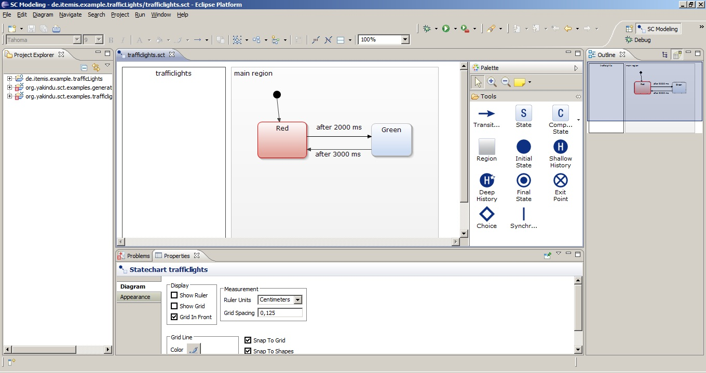
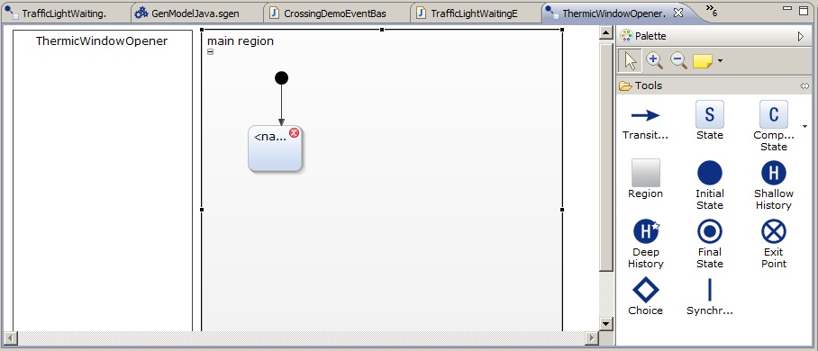
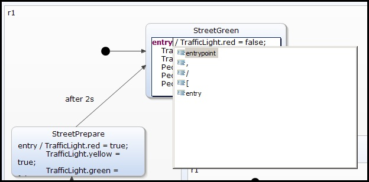
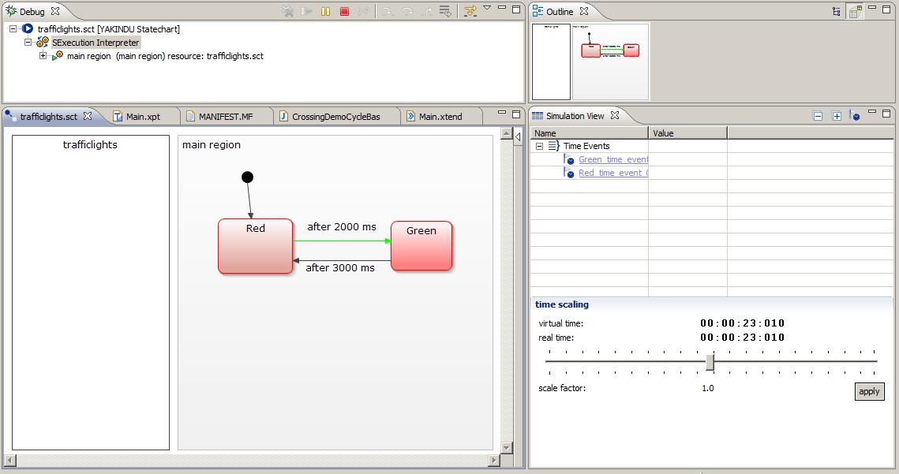

Here you learn how to install the YAKINDU SCT2 and to make the first steps.
The Yakindu Statechart Tools 2 are built upon Java and Xtext. So you need to have installed a Java Runtime Environment and Xtext installed. The easier way to get this is to install the pre configured Xtext contribution.
The Yakindu Statechart Tools 2 need Eclipse Indigo 3.7 or higher and Xtext 2.0.1 exactly (no higher) to work correctly.
You install the Yakindu Plug-Ins from the update site: http://updates.yakindu.com/indigo/milestones.
When the installation finished the wizard will ask to reopen Eclipse. The restart is important to make the newly installed software work correctly.
In the following you will create your first state machine with the YAKINDU Statechart tools and simulate it.
For modeling purposes the YAKINDU statechart tools offer a workbench perspective. Such a perspective is a bunch of editors and views that are organized in a pre defined order on the screen. Open the Yakindu SC Modeling perspective by clicking Window > Open Perspective > SC Modeling. This perspective is optimized for statechart modeling. It consists of

In the Eclipse workbench all elements are organized in projects. So first to do is to create a project. Therefore click File > New..." > *Project. In the wizard click Next and insert a project name. Click Finish.
Now you see your project in the project explorer.
In the new project now create a new statechart model:
The newly created model has a problem. The new state has a red dot with a cross. This is an error marker. If you look at the problems view (the Problems tab) you see more details to that problem. In that case it says: „A state must have a name”.
To solve the problem:
The error marker and the entry in the problems view vanish.

With the YAKINDU Statechart editor you create or modify state models. The editor automatically opens on .sct files.
The editor consists of three parts:

You can use the textual modeling field for declarating internal behavior of states and events or variables. The editor also owns comfortable functionality like syntax highlighting, code completion, live validation. The following image shows an example of code completion in the text fields of the editor:

YAKINDU SCT 2 comes with a perspective to simulate the models. To simulate a state machine open the Yakindu SC Simulation perspective by clicking Window > Open Perspective > SC Simulation. This perspective is optimized for simulation purposes and consists of:

The simulation view is an interactive view to watch and control the state machine simulation. To get it open the simulation perspective.

During the simulation in the statechart editor the active state gets a red color. The previous transition is green. The simulation view shows the events that trigger the states. You can change values here to trigger events. Beneath the table there are two clocks. One for the virtual time and one for the real time and a slider to change virtual time.